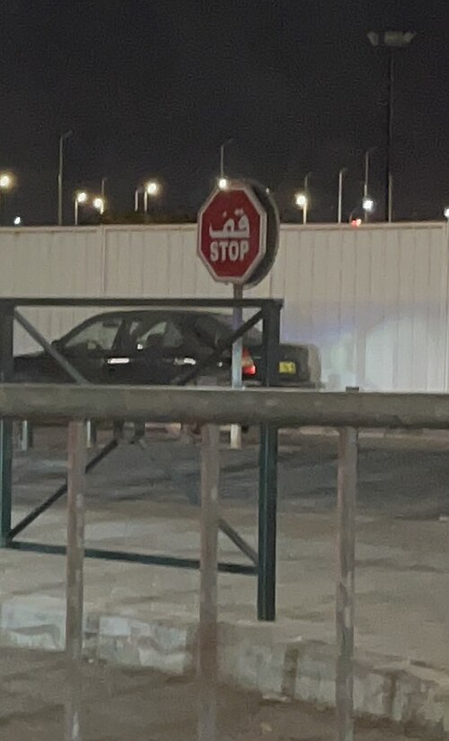
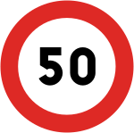
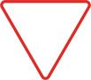

التوقف الإجباري
تعني التوقف التام عند خط التوقف أو قبل التقاطع ثم التأكد من أن الطريق آمن.
- توقف تماماً، لا تباطؤ فقط
- راقب المشاة وحركة المرور
- انطلق عندما يتوفر الأمان
درس الفئة الثانية
تخبرك هذه الفئة بما لا يُسمح به أو تحدد لك قيداً تنظيمياً يجب احترامه في المقطع الذي تبدأ عنده الإشارة.


تعني التوقف التام عند خط التوقف أو قبل التقاطع ثم التأكد من أن الطريق آمن.
يشير الرقم داخل الإشارة إلى السرعة القصوى المسموح بها في ذلك المقطع.

مثال لإشارة تنظيمية؛ راقب الرمز واللوحات المرافقة كي تفهم القيد المطلوب.
إعلان